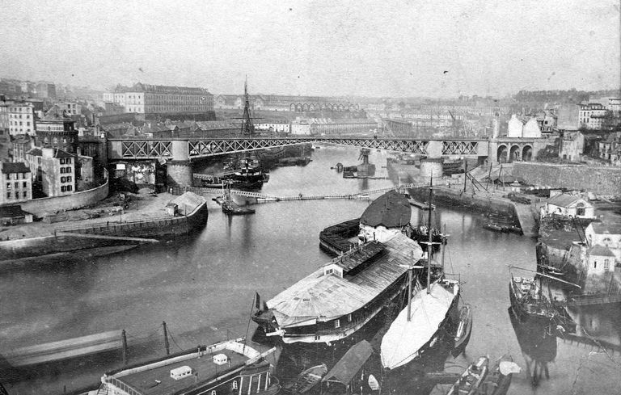

Progression
Nous avons actuellement réalisé le travail préparatoire, à savoir comment nous pensons réaliser l'application.
Nous pensons modéliser le Pont national de Brest le plus fidèlement possible à partir d'archives de la ville de Brest.
Nous travaillons actuellement sur la modélisation de la travée et du cabestan pour la partie mécanique et sur la création d'un décor réduit sur Unity pour la parie informatique.

Historique
 Dossier UML
Dossier UML